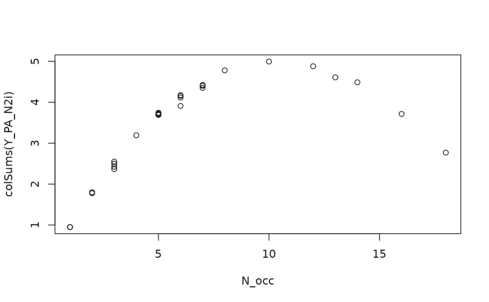

Calculate Hill number N2.
References
Hill,M.O. (1973). Diversity and evenness: a unifying notation and its consequences. Ecology, 54, 427-432. doi:10.2307/1934352 .
ter Braak, C.J.F. (2019). New robust weighted averaging- and model-based methods for assessing trait-environment relationships. Methods in Ecology and Evolution, 10 (11), 1962-1971. doi:10.1111/2041-210X.13278 .
Examples
data("dune_trait_env")
# rownames are carried forward in results
rownames(dune_trait_env$comm) <- dune_trait_env$comm$Sites
Y <- dune_trait_env$comm[, -1] # must delete "Sites"
Y_N2 <- ipf2N2(Y, updateN2 = FALSE, N2N_N2_species = FALSE)
attr(Y_N2, "iter") # 61
#> [1] 61
# show that column margins of the transform matrix are
# equal to the Hill N2 values
diff(range(colSums(Y_N2) / apply(X = Y, MARGIN = 2, FUN = fN2))) # 4.440892e-16
#> [1] 4.440892e-16
diff(range(rowSums(Y_N2) / apply(X = Y, MARGIN = 1, FUN = fN2))) # 0.07077207
#> [1] 8.881784e-16
Y_N2i <- ipf2N2(Y, updateN2 = TRUE, N2N_N2_species = FALSE)
attr(Y_N2i, "iter") # 5
#> [1] 88
diff(range(colSums(Y_N2i) / apply(X = Y_N2i, MARGIN = 2, FUN = fN2))) # 2.220446e-15
#> [1] 7.771561e-16
diff(range(rowSums(Y_N2i) / apply(X = Y_N2i, MARGIN = 1, FUN = fN2))) # 8.881784e-16
#> [1] 1.332268e-15
# the default version:
Y_N2N_N2i <- ipf2N2(Y)
# ie.
# Y_N2N_N2i <- ipf2N2(Y, updateN2 = TRUE, N2N_N2_species = TRUE)
attr(Y_N2N_N2i, "iter") # 29
#> [1] 29
N2 <- apply(X = Y_N2N_N2i, MARGIN = 2, FUN = fN2)
N <- nrow(Y)
diff(range(colSums(Y_N2N_N2i) / (N2 * (N - N2)))) # 4.857226e-17
#> [1] 4.857226e-17
N2_sites <- apply(X = Y_N2N_N2i, MARGIN = 1, FUN = fN2)
R <- rowSums(Y_N2N_N2i)
N * max(N2_sites / sum(N2_sites) - R / sum(R)) # 0.006116092
#> [1] 0.006116092
sum(Y > 0)
#> [1] 179
sum(Y_N2N_N2i)
#> [1] 94.12255
sum(Y)
#> [1] 626
mod0 <- dc_CA(formulaEnv = ~ A1 + Moist + Mag + Use + Manure,
formulaTraits = ~ SLA + Height + LDMC + Seedmass + Lifespan,
response = Y,
dataEnv = dune_trait_env$envir,
dataTraits = dune_trait_env$traits,
divide = FALSE,
verbose = FALSE)
mod1 <- dc_CA(formulaEnv = ~ A1 + Moist + Mag + Use + Manure,
formulaTraits = ~ SLA + Height + LDMC + Seedmass + Lifespan,
response = Y_N2N_N2i,
dataEnv = dune_trait_env$envir,
dataTraits = dune_trait_env$traits,
verbose = FALSE)
#> Argument divideBySiteTotals set to FALSE, as species totals are proportional to N2(N-N2).
#> You can overrule this by specifying divideBySiteTotals explicitly.
mod1$eigenvalues / mod0$eigenvalues
#> dcCA1 dcCA2 dcCA3 dcCA4 dcCA5
#> 1.1829169 1.3376443 1.3744124 1.5197560 0.8780165
# ratios of eigenvalues greater than 1,
# indicate axes with higher (squared) fourth-corner correlation
# ipf2N2 for a presence-absence data matrix
Y_PA <- 1 * (Y > 0)
Y_PA_N2 <- ipf2N2(Y_PA, N2N_N2_species = FALSE)
attr(Y_PA_N2, "iter") # 3
#> [1] 3
diff(range(Y_PA - Y_PA_N2)) # 7.771561e-16, i.e no change
#> [1] 7.771561e-16
Y_PA_N2i <- ipf2N2(Y_PA, N2N_N2_species = TRUE)
attr(Y_PA_N2i, "iter") # 567
#> [1] 567
N_occ <- colSums(Y_PA) # number of occurrences of species
N <- nrow(Y_PA)
plot(N_occ, colSums(Y_PA_N2i))

cor(colSums(Y_PA_N2i), N_occ * (N - N_occ)) # 0.9826123
#> [1] 0.9826123
mod2 <- dc_CA(formulaEnv = ~ A1 + Moist + Mag + Use + Manure,
formulaTraits = ~ SLA + Height + LDMC + Seedmass + Lifespan,
response = Y_PA,
dataEnv = dune_trait_env$envir,
dataTraits = dune_trait_env$traits,
divideBySiteTotals = FALSE,
verbose = FALSE)
mod3 <- dc_CA(formulaEnv = ~ A1 + Moist + Mag + Use + Manure,
formulaTraits = ~ SLA + Height + LDMC + Seedmass + Lifespan,
response = Y_PA_N2i,
dataEnv = dune_trait_env$envir,
dataTraits = dune_trait_env$traits,
verbose = FALSE)
#> Argument divideBySiteTotals set to FALSE, as species totals are proportional to N2(N-N2).
#> You can overrule this by specifying divideBySiteTotals explicitly.
mod3$eigenvalues / mod2$eigenvalues
#> dcCA1 dcCA2 dcCA3 dcCA4 dcCA5
#> 1.578066 1.309621 1.649829 1.648562 1.370179
# ratios of eigenvalues greater than 1,
# indicate axes with higher (squared) fourth-corner correlation